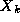
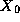
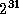
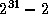
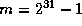
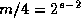

![[DBPP]](pictures//asm_color_tiny.gif)


![[Search]](pictures//search_motif.gif)
Although the casinos at Monte Carlo are, one hopes, based on random phenomena, true random numbers are rarely used in computing. Not only would such numbers be difficult to generate reliably, but also the lack of reproducibility would make the validation of programs that use them extremely difficult. Instead, computers invariably use pseudo-random numbers: finite sequences generated by a deterministic process but indistinguishable, by some set of statistical tests, from a random sequence. (In the following, we use the term random to mean pseudo-random.) The statistical methods used to validate random sequences are an important topic of research, but beyond the scope of this book. See the chapter notes for further reading on this subject.
Methods for generating a sequence of random numbers have been extensively studied and are well understood. A function called a generator is defined that, when applied to a number, yields the next number in the sequence. For example, the linear congruential generators considered in this chapter have the general form
where  is the k th element of the sequence and , a , c , and m define the generator. Random numbers in the range [0,1] are then obtained by dividing by m .
As numbers are taken from a finite set (for example, integers between 1 and ), any generator will eventually repeat itself. The length of the repeated cycle is called the period of the generator. A good generator is one with a long period and no discernible correlation between elements of the sequence.
The parameters , a , c , and m in the linear congruential generator are chosen to make the sequence look as random as possible. Common choices for these values are
This generator has period m-1 , that is,  for . Other common choices are
in which case the period of the generator is . A typical choice for m in this case is the word size of the machine on which we are executing. See the references in the chapter notes for sources of appropriate values for a , c , and m .
A fundamental property of Equation 10.1 is that if c=0 , then
That is, the (k+n) th element of the sequence is related to the k th in the same way as is the (k+1) th, albeit with a different value for a . We shall exploit this property when developing parallel generators.
© Copyright 1995 by Ian Foster